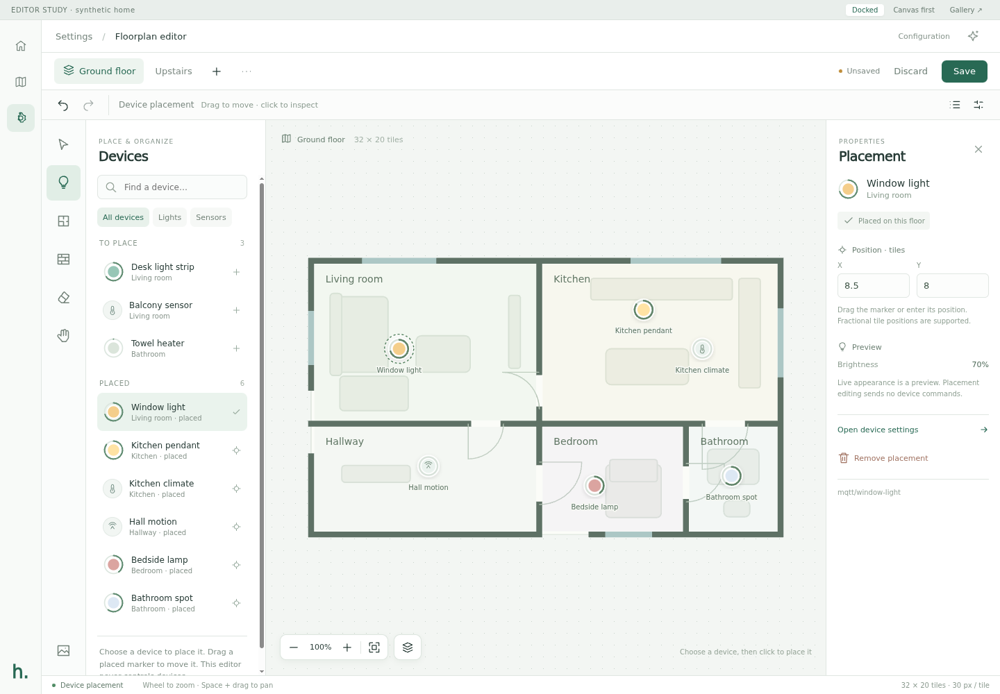
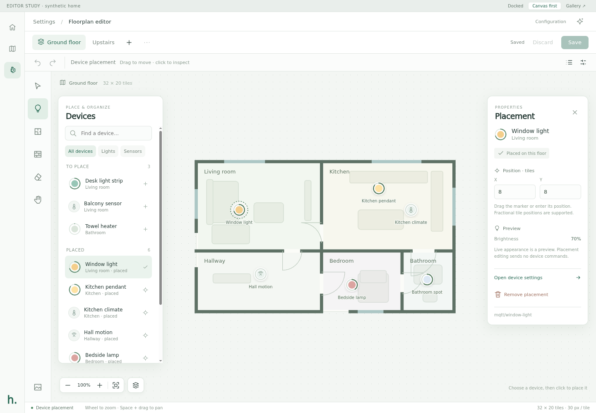
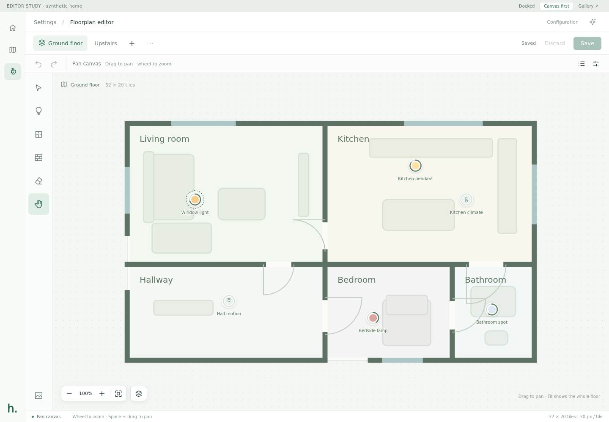
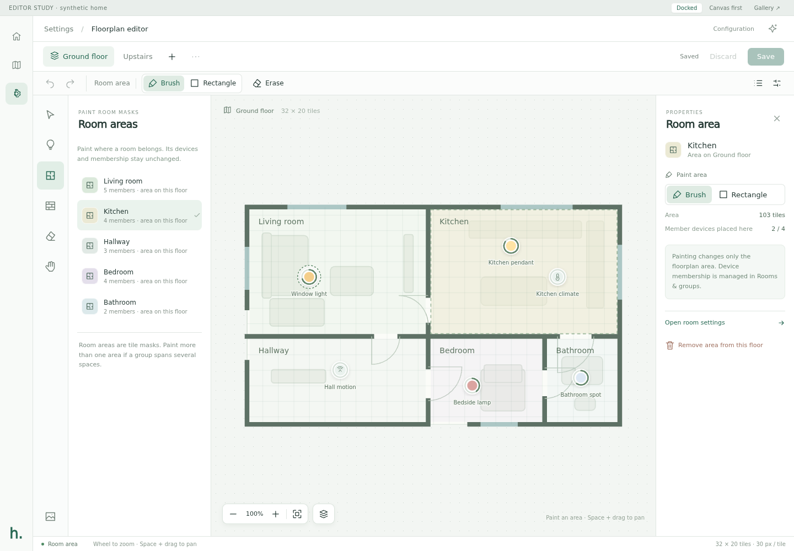
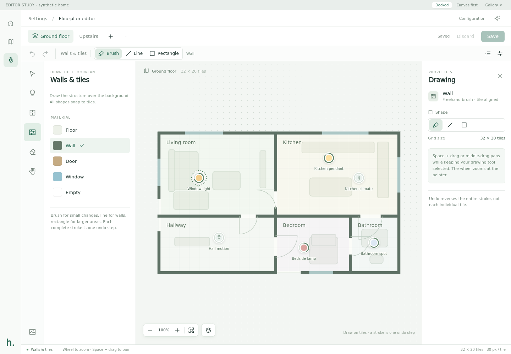
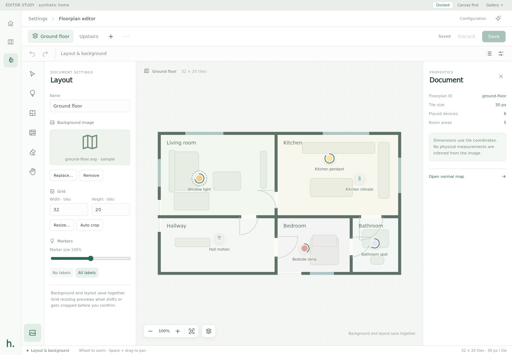
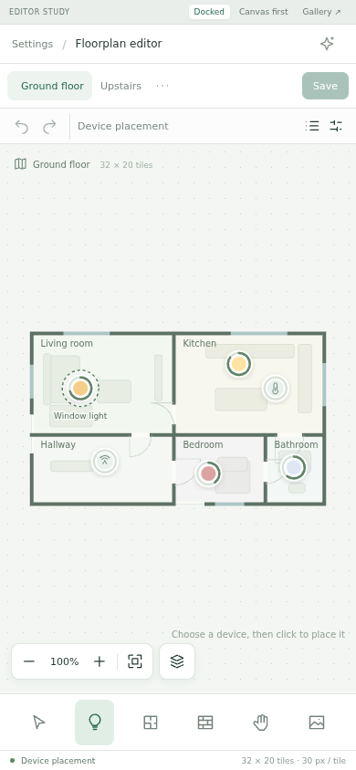
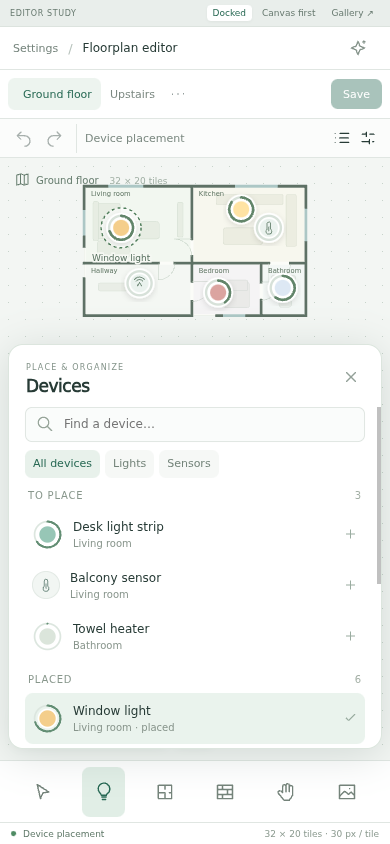
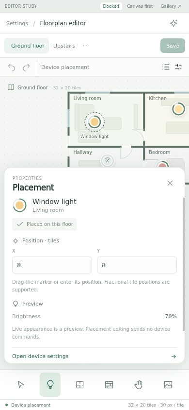
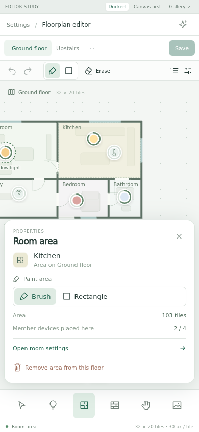

A · Docked panels
The catalog and inspector have dedicated space. Easy to scan, with no tools covering the drawing.

The canvas stays put. Separate Devices, Room areas and Walls modes bring their own library, tools and properties. Only panels scroll; the wheel zooms, and middle-drag or Space + drag pans.
Same editing model, different use of the canvas. Docked is the proposed default; both allow hiding panels.
The catalog and inspector have dedicated space. Easy to scan, with no tools covering the drawing.

Floating panels over a larger canvas. Fit respects visible panels; close them when you need the whole workspace.

Use the Hand tool for navigation. Library and properties buttons reopen the panels; Fit uses the space available.

Room masks are independent of room membership. Walls use existing tile materials and drawing shapes.
Choose a room, paint or erase its mask. The inspector shows placement coverage and links to room settings.

Floor, Wall, Door, Window and Empty, with Brush, Line and Rectangle. Each completed stroke is one undo step.

Background replacement, grid dimensions and global marker appearance have a dedicated mode. Import/export and document actions live in the document menu.

Tools stay at the bottom. One tray opens at a time; the view keeps the selected marker or room above the inspector.
Room labels and color/brightness previews, without a scrolling page.

Search and choose a device, then place it on the canvas.

Selected light stays visible. Enter coordinates or drag its marker.

The same paint tools and related room link, in a compact tray.
